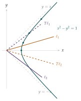

The transformation \(T\) from \(\begin{pmatrix} x \\ y \end{pmatrix}\) to \(\begin{pmatrix} x' \\ y' \end{pmatrix}\) in two-dimensional space is given by \[\begin{pmatrix} x' \\ y' \end{pmatrix} = \begin{pmatrix} \cosh u & \sinh u \\ \sinh u & \cosh u \end{pmatrix}\begin{pmatrix} x \\ y \end{pmatrix},\] where \(u\) is a positive real constant. Show that the curve with equation \(x^2 - y^2 = 1\) is transformed into itself. Find the equations of two straight lines through the origin which transform into themselves.
A line, not necessarily through the origin, which has gradient \(\tanh v\) transforms under \(T\) into a line with gradient \(\tanh v'\). Show that \(v' = v + u\).
The lines \(\ell_1\) and \(\ell_2\) with gradients \(\tanh v_1\) and \(\tanh v_2\) transform under \(T\) into lines with gradients \(\tanh v_1'\) and \(\tanh v_2'\) respectively. Find the relation satisfied by \(v_1\) and \(v_2\) that is necessary and sufficient for \(\ell_1\) and \(\ell_2\) to intersect at the same angle as their transforms.
In the case when \(\ell_1\) and \(\ell_2\) meet at the origin, illustrate in a diagram the relation between \(\ell_1\), \(\ell_2\) and their transforms.
The hook
A rotation matrix \(\begin{pmatrix} \cos u & -\sin u \\ \sin u & \cos u \end{pmatrix}\) moves points round the circle \(x^2 + y^2 = 1\), and rotating by \(u\) then by \(w\) is rotating by \(u + w\). Replace \(\cos\) and \(\sin\) by \(\cosh\) and \(\sinh\), adjust a sign, and you get the matrix in this question. It moves points along the hyperbola \(x^2 - y^2 = 1\) instead, and it too adds its “angles”. It is a hyperbolic rotation.
This is not just a curiosity. With \(x\) standing for time and \(y\) for distance (in units where the speed of light is \(1\)), the matrix is a Lorentz boost: the transformation, discovered in Einstein’s special relativity, between the measurements of two observers moving at constant velocity relative to each other. The “hyperbolic angle” \(u\) is the rapidity, and the fact that rapidities add explains the strange velocity-addition law we met in Section 3.8.
Before you start
What identity do \(\cosh u\) and \(\sinh u\) satisfy, analogous to \(\cos^2u + \sin^2u = 1\)? And what are the addition formulas for \(\cosh(u + v)\) and \(\sinh(u + v)\)?
\(\cosh^2u - \sinh^2u = 1\), and \[\begin{aligned} \cosh(u + v) &= \cosh u\cosh v + \sinh u\sinh v, \\ \sinh(u + v) &= \sinh u\cosh v + \cosh u\sinh v. \end{aligned}\] You can check these from the definitions \(\cosh u = \frac12(e^u + e^{-u})\) and \(\sinh u = \frac12(e^u - e^{-u})\). The point \((\cosh v, \sinh v)\) lies on the hyperbola \(x^2 - y^2 = 1\), just as \((\cos v, \sin v)\) lies on the circle.
Working it through
Stage 1 The hyperbola is invariant
\[\begin{aligned} x'^2 - y'^2 &= (x\cosh u + y\sinh u)^2 - (x\sinh u + y\cosh u)^2 \\ &= (x^2 - y^2)(\cosh^2u - \sinh^2u) = x^2 - y^2, \end{aligned}\] since the cross terms \(2xy\cosh u\sinh u\) cancel. So \(T\) preserves \(x^2 - y^2\), and in particular maps the hyperbola \(x^2 - y^2 = 1\) to itself.■
Which lines through the origin are mapped to themselves? (Look for eigenvectors.)
\(T\begin{pmatrix} 1 \\ 1 \end{pmatrix} = (\cosh u + \sinh u)\begin{pmatrix} 1 \\ 1 \end{pmatrix} = e^u\begin{pmatrix} 1 \\ 1 \end{pmatrix}\) and \(T\begin{pmatrix} 1 \\ -1 \end{pmatrix} = e^{-u}\begin{pmatrix} 1 \\ -1 \end{pmatrix}\). So the lines \(y = x\) and \(y = -x\) are each mapped to themselves: one is stretched by \(e^u\), the other shrunk by \(e^{-u}\). These are the asymptotes of the hyperbola.■
Stage 2 Adding hyperbolic angles
A line with gradient \(\tanh v\) has direction vector \((\cosh v, \sinh v)\). Its image has direction \[T\begin{pmatrix} \cosh v \\ \sinh v \end{pmatrix} = \begin{pmatrix} \cosh u\cosh v + \sinh u\sinh v \\ \sinh u\cosh v + \cosh u\sinh v \end{pmatrix} = \begin{pmatrix} \cosh(u + v) \\ \sinh(u + v) \end{pmatrix},\] which has gradient \(\tanh(u + v)\). A linear map sends parallel lines to parallel lines, so this holds whether or not the line passes through the origin. Hence \(v' = v + u\).■
Stage 3 When are angles preserved?
The angle \(\psi\) between two lines with gradients \(m_1\), \(m_2\) satisfies \(\tan\psi = \left|\frac{m_1 - m_2}{1 + m_1m_2}\right|\). Simplify this when \(m_i = \tanh v_i\). (Hint: put everything over \(\cosh v_1\cosh v_2\).)
Using \(\tanh v_1 - \tanh v_2 = \dfrac{\sinh(v_1 - v_2)}{\cosh v_1\cosh v_2}\) and \(1 + \tanh v_1\tanh v_2 = \dfrac{\cosh(v_1 + v_2)}{\cosh v_1\cosh v_2}\), \[\tan\psi = \left|\frac{\sinh(v_1 - v_2)}{\cosh(v_1 + v_2)}\right|.\] After the transformation, \(v_1 - v_2\) is unchanged and \(v_1 + v_2\) becomes \(v_1 + v_2 + 2u\).
When is \(\cosh(v_1 + v_2) = \cosh(v_1 + v_2 + 2u)\)?
Assuming the lines are not parallel (\(v_1 \neq v_2\)), the angles are equal exactly when \(\cosh(v_1 + v_2) = \cosh(v_1 + v_2 + 2u)\). Since \(\cosh\) is even and strictly increasing on \([0, \infty)\), this means \(v_1 + v_2 = \pm(v_1 + v_2 + 2u)\). The plus sign gives \(u = 0\), which is excluded, so \[v_1 + v_2 = -u. \qed\]
Stage 4 The picture
When \(v_1 + v_2 = -u\), the transformed angles are \(v_1' = v_1 + u = -v_2\) and \(v_2' = v_2 + u = -v_1\). So the image of \(\ell_1\) has gradient \(-\tanh v_2\): it is the reflection of \(\ell_2\) in the \(x\)-axis, and the image of \(\ell_2\) is the reflection of \(\ell_1\). For lines through the origin, the transformation swaps the two lines and reflects them, which explains why the angle between them is unchanged (Figure 7.6.1).

Looking back
An invariant quadratic form. \(T\) preserves \(x^2 - y^2\), just as a rotation preserves \(x^2 + y^2\).
Eigenvectors are the asymptotes. The lines left invariant are \(y = \pm x\), stretched and shrunk by \(e^{\pm u}\).
Hyperbolic angles add. Parametrising directions by \(\tanh v\) turned the action of \(T\) into simple addition, \(v \mapsto v + u\).
What’s really going on
In Einstein’s special relativity (1905), different observers moving at constant velocity relative to each other disagree about time and distance, but they all agree on the quantity \(t^2 - x^2\) (with the speed of light \(c = 1\)), the spacetime interval. The transformations preserving it are the Lorentz transformations, and in one space dimension they are exactly the matrices in this question, with \(x\) as time and \(y\) as distance. An observer moving with velocity \(v = \tanh u\) uses coordinates related to ours by this matrix, with \(\cosh u = \frac{1}{\sqrt{1 - v^2}}\), the famous factor \(\gamma\) of time dilation. Hermann Minkowski saw in 1908 that this makes spacetime a four-dimensional geometry with a “distance” that has a minus sign in it: “Henceforth space by itself, and time by itself, are doomed to fade away into mere shadows.”
What the question means physically
The invariant lines \(y = \pm x\) are the paths of light rays. They are the same for every observer: the speed of light is the same for everyone, the founding principle of relativity.
The hyperbola \(x^2 - y^2 = 1\) is the set of events one unit of “proper time” from the origin, as measured by observers moving at all possible constant velocities.
Adding rapidities. A line of gradient \(\tanh v\) through the origin is the path of an object moving at velocity \(\tanh v\). A boost by rapidity \(u\) changes its velocity to \(\tanh(v + u) = \frac{\tanh v + \tanh u}{1 + \tanh v\tanh u}\), which is Einstein’s velocity-addition formula from Section 3.8. Velocities do not add; rapidities do.
And in Section 5.8 we saw the same addition formula as the distance rule in the Poincaré disc: the set of possible velocities in relativity, measured with rapidity, is a hyperbolic space.
The thinking skill
Describe your objects by a parameter in which the transformation becomes simple.
Describing directions by their gradient, \(T\) acts by a messy formula; describing them by \(v\) with gradient \(\tanh v\), it simply adds \(u\). The same idea made rotations simple with angles, and made the map \(x \mapsto x^2 - 2\) simple in Section 2.8.
Try this next
Composing boosts. Show that \(T(u)T(w) = T(u + w)\), where \(T(u)\) is the matrix in the question. What is \(T(u)^{-1}\)?
Time dilation. A spaceship travels at \(0.8\) times the speed of light. Find its rapidity \(u\) and \(\cosh u\). If \(10\) years pass on Earth, how much time passes on the ship? (Use \(t_{\text{ship}} = t_{\text{Earth}}/\cosh u\).)
Hyperbolic area. Show that the area enclosed by the hyperbola \(x^2 - y^2 = 1\), the \(x\)-axis and the line from the origin to \((\cosh v, \sinh v)\) is \(\frac v2\), just as the corresponding area for a circle is \(\frac\theta2\). Why must \(T\) preserve such areas?
Squeeze. Change coordinates to \(p = x + y\), \(q = x - y\). Show that \(T\) becomes \(p \mapsto e^up\), \(q \mapsto e^{-u}q\), and that the hyperbola becomes \(pq = 1\). Describe the transformation geometrically in these coordinates.
Further reading
Edwin Taylor & John Wheeler, Spacetime Physics (W. H. Freeman). Special relativity with rapidity and spacetime diagrams, for students with A-level mathematics.
Tevian Dray, The Geometry of Special Relativity (CRC Press). Relativity as hyperbolic trigonometry, in exactly the spirit of this section.
Albert Einstein, Relativity: The Special and the General Theory (various editions). Einstein’s own popular account, still very readable.